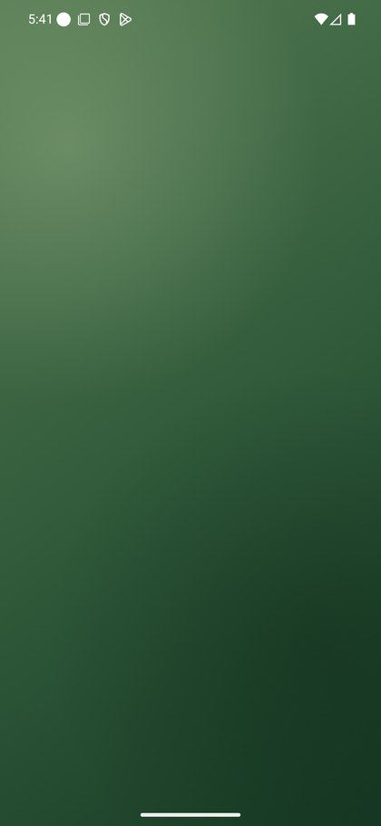
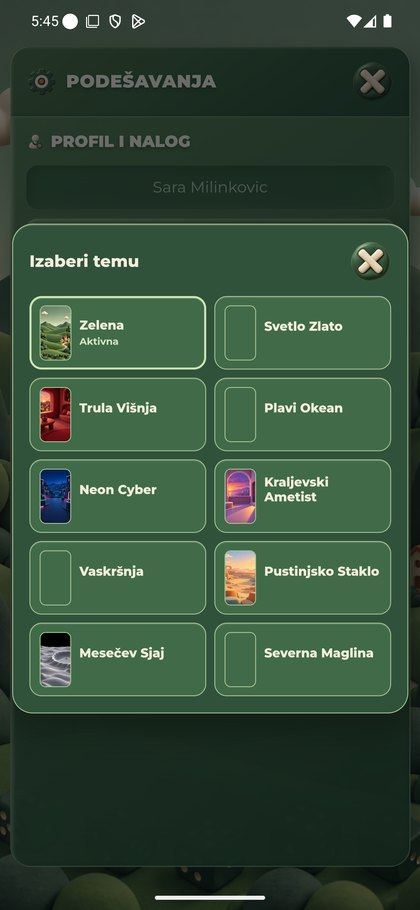
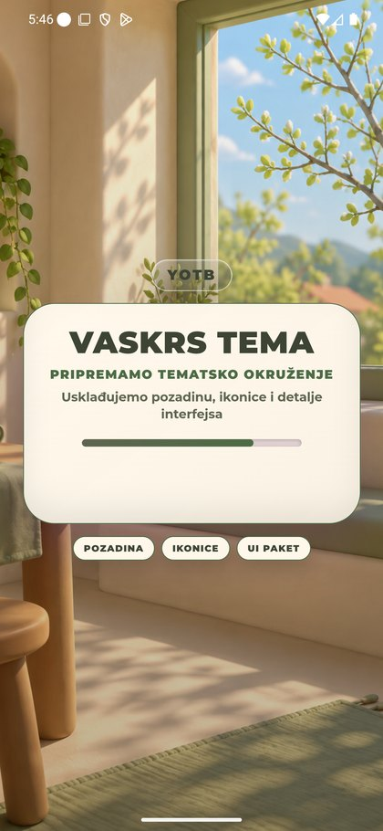
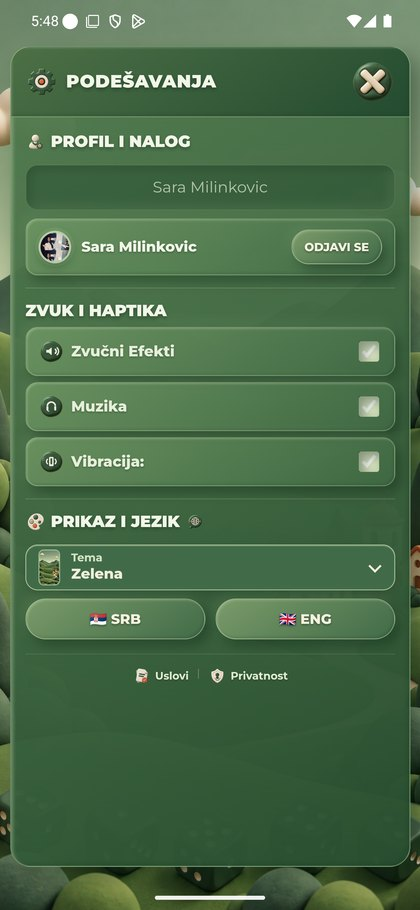
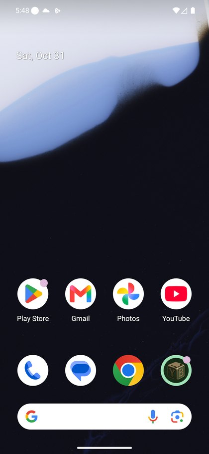
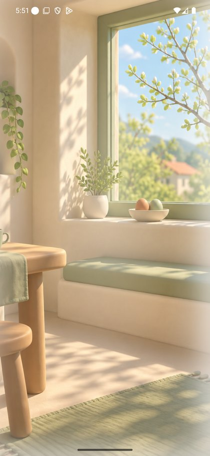
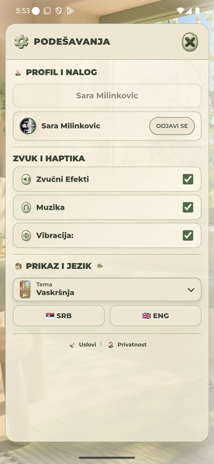
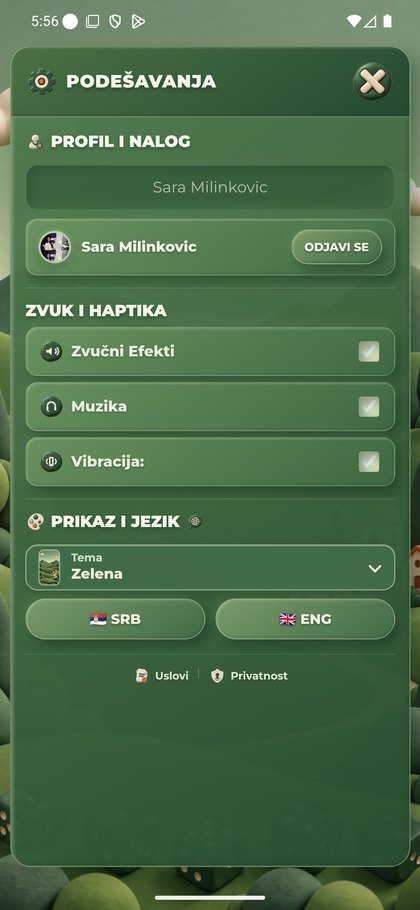
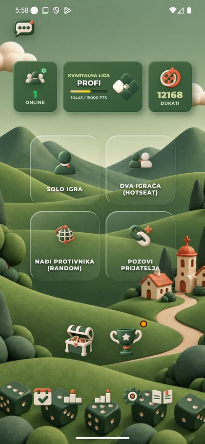

v6.43 — prvi Easter izbor i dalje neuspešan
Oba servisa829a45b1, sedam javnih JS fajlova potvrđeno. Duži24s retry zaista je izvršen, ali poslednjiod28PNGspreman tek37.158ms. Prvi izbor zadržaoGreen; ponovljen iz keša uspešan.
R39 nije zatvoren native dokazom. Lokalni18s test ostaje potvrda samo tog slučaja. Ovaj sporiji Android prolaz prekoračuje6+24s; rok nije ponovo produžavan.
Četiri javna PNG-a sa QA servisa vratila200/istiSHAza1,326–1,452sna računaru. To nije WebView mera niti dokazuje da je cela serverska putanja brza. Host1,31/15,23GBslobodno,CPU54%; nije dokazan uzrok. Sačuvan keš, nema10/10native/cold-cache/S25provere.
Prvi emulator sa Android home privremeno pauziran tokom ponovljenog toplog izbora, zatim vraćenrunning. Green vraćen na drugom. Bez nove igre/oglasa/nagrade/DB; bez novih runtime izmena.
Nalazi i granice · Filtrirani PNG timing · Objavljeni fajlovi · Javni PNG odgovori
Početni gradijent posle otvaranja QA aplikacije; nije precizno mereno vreme spremnog menija.

Kasnije kompletan Green meni, saldo12168.
Kompletna Green Podešavanja pre promene teme.
Izbor tema sa delom još neučitanih preview slika.

Prvi i jedini Easter izbor: prikaz pripreme, konačan uspeh nije potvrđen.

Prvi izbor nije uspeo; zadržana Zelena tema.

Prvi emulator na Android početnom ekranu pre privremene pauze.

Ponovljen izbor po završetku PNG-ova: prelazni kadar samo sa Easter pozadinom.

Konačna Easter Podešavanja posle ponovljenog izbora.

Povratak na Zelenu temu jednim izborom.

Završni Green meni; oba emulatora ponovo u radu.
